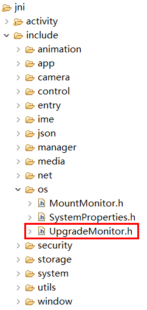
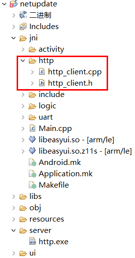
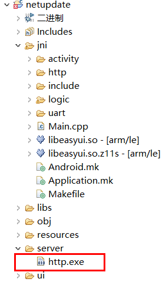

远程升级
目前系统没有直接进行远程升级的接口。
但是我们可以了解TF卡检测升级的机制后，再添加上一些自己的代码，即可达到远程升级的目的。
我们先介绍一般插TF卡升级的流程。
TF卡检测升级流程
当系统启动或者插入TF卡的时候，如果TF卡正常挂载，系统会检测TF卡根目录下是否存在 update.img 文件 (系统内，TF卡根目录映射为 /mnt/extsd)。
如果存在，进一步校验文件是否符合要求，如果通过校验，然后弹出升级提示界面，用户可以选择进行升级。
如果不存在，结束检测流程，界面无任何动作。
实现步骤
- 首先我们要下载升级镜像
update.img。
一般情况下，通过HTTP协议下载文件是最简单的方式，当然，也可以根据实际情况选择其他协议。
下载后，将镜像文件保存到TF卡目录/mnt/extsd/下。[!Note] 如果机器内没有插TF卡，这个目录仍然可以写入，因为它是保存在内存中的。 受限于内存大小，如果镜像文件过大，会造成设备运行异常、或者升级失败。
如果有插入TF卡，可以忽略内存大小的问题。 调用升级检测函数
先下载 UpgradeMonitor.h 源文件，保存到项目的jni/include/os目录下。
然后调用接口检测升级。
#include "os/UpgradeMonitor.h"//主动检测 /mnt/extsd目录下是否有正确的update.img文件， //如果有，则弹出升级提示框， //如果没有，则无任何动作 UpgradeMonitor::getInstance()->checkUpgradeFile("/mnt/extsd");弹出升级提示界面后，用户可以选择是否升级。
至此，已完全实现远程升级功能。
下载文件后自动更新
如果希望下载升级文件后，强制更新，那么只需要参考自动升级文档，用代码创建 zkautoupgrade文件即可。
避免反复升级
在上面的步骤中，我们将镜像文件保存在 /mnt/extsd/目录下，成功升级后，机器会自动重启，
这时，系统会执行常规的升级检测流程，由于镜像文件的存在，升级提示界面再一次弹出，导致了重复升级。
解决方法
下载镜像文件时，将它保存到非 /mnt/extsd/ 目录， 例如： /mnt/extsd/temp/ ，
并且，也同步修改调用检测函数的参数。
UpgradeMonitor::getInstance()->checkUpgradeFile("/mnt/extsd/temp");
样例参考
完整样例下载
样例中简单实现了http客户端下载文件，参考源码http部分。
下载文件属于耗时操作，推荐放到独立线程中，这样才不会影响界面的即时响应。

关键代码
class DownloadThread : public Thread { protected: virtual bool threadLoop(){ http::HttpClient http; mTextview1Ptr->setText("下载升级文件"); //创建升级文件的保存路径 system("mkdir /mnt/extsd/temp"); //这里修改为真实服务IP string err = http.Download("192.168.1.1/update.img", 80, "/mnt/extsd/temp/update.img"); mTextview1Ptr->setText(err); if (err.empty()) { UpgradeMonitor::getInstance()->checkUpgradeFile("/mnt/extsd/temp"); } mButton1Ptr->setInvalid(false); return false; }; };服务端实现
为了方便测试，例程中包含了一个http.exe，它是一个静态文件服务。
将制作好的升级镜像文件
update.img和http.exe放到同一文件夹下，然后在电脑上双击执行http.exe，只要网络正常，即可 通过网址下载同目录下的镜像文件。
例如：
http://192.168.1.1/update.img
(请注意将IP地址修改为电脑当前IP)
服务端开启后，再运行样例代码，即可测试远程升级。